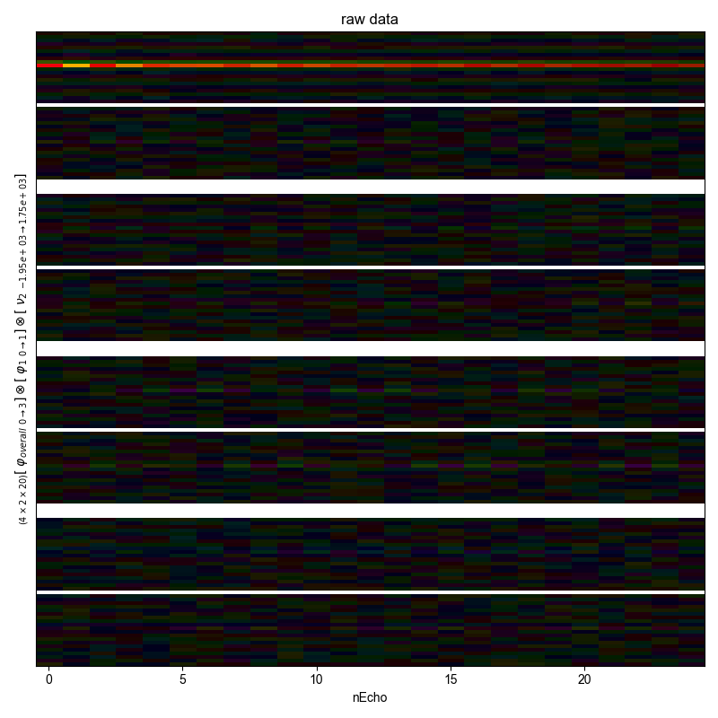
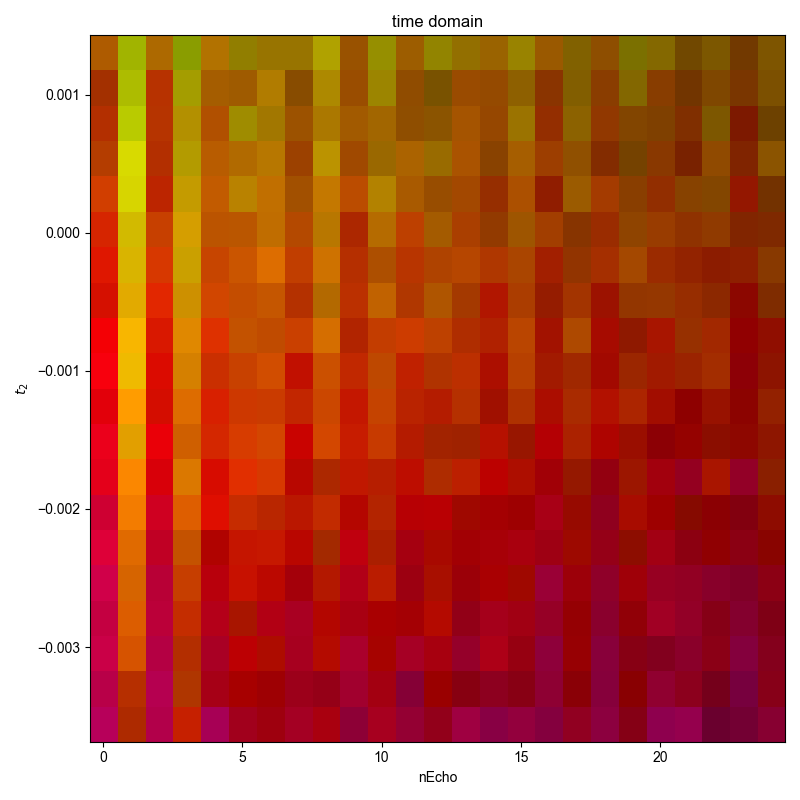
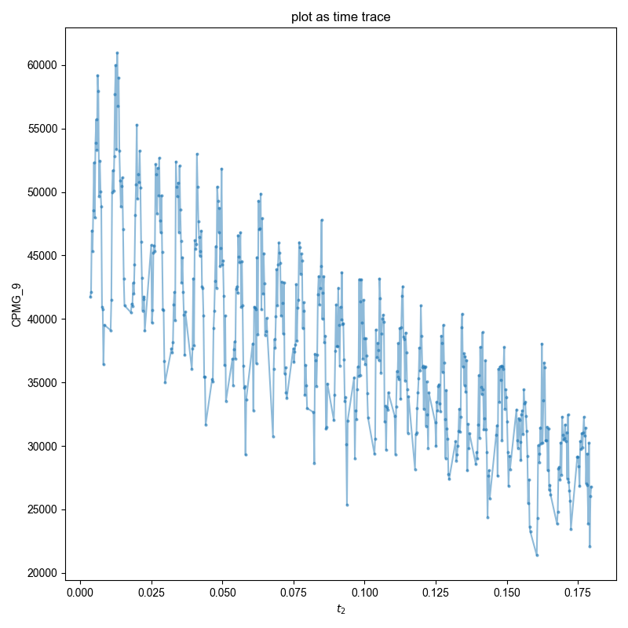

Note
Go to the end to download the full example code
CPMG-specific processing¶
py proc_CPMG.py NODENAME FILENAME EXP_TYPE
Based on proc_raw.py: Here we apply the postprocessing, and then do some stuff specific to a CPMG.
Tested with:
py proc_CPMG.py CPMG_9 240620_200uM_TEMPOL_pm_generic_CPMG.h5 ODNP_NMR_comp/Echoes
- 
- 
- 
You didn't set units for indirect before saving the data!!!
You didn't set units for nEcho before saving the data!!!
You didn't set units for t2 before saving the data!!!
WARNING! the file doesn't have coherence_pathway set, so I'm assuming {'ph1': 1, 'ph_overall': -1}
1: raw data |||(None, None)
2: time domain |||(None, None)
3: plot as time trace |||None
from pyspecProcScripts.load_data import lookup_table
from pyspecProcScripts import select_pathway
import pyspecdata as psd
import sys, os
import numpy as np
from itertools import cycle
import matplotlib.pylab as plt
# sphinx_gallery_thumbnail_number = 3
if (
"SPHINX_GALLERY_RUNNING" in os.environ
and os.environ["SPHINX_GALLERY_RUNNING"] == "True"
):
sys.argv = [
sys.argv[0],
"CPMG_9",
"240620_200uM_TEMPOL_pm_generic_CPMG.h5",
"ODNP_NMR_comp/Echoes",
]
filter_data = False
colorcyc_list = plt.rcParams["axes.prop_cycle"].by_key()["color"]
colorcyc = cycle(colorcyc_list)
assert len(sys.argv) == 4
d = psd.find_file(
sys.argv[2], exp_type=sys.argv[3], expno=sys.argv[1], lookup=lookup_table
)
with psd.figlist_var() as fl:
d.squeeze()
fl.next("raw data")
rows = np.prod([d.shape[j] for j in d.dimlabels[:-1]])
fl.image(d, interpolation="auto")
# {{{ allows us to see how filtering affects things
# -- relevant to considerations about
# integration, etc
if filter_data:
d["t2":(None, -750)] = 0
d["t2":(750, None)] = 0
fl.next("filtered data")
fl.image(d)
# }}}
d.ift("t2")
fl.next("time domain")
cohpth = d.get_prop("coherence_pathway")
if cohpth is None:
cohpth = {
"ph1": +1,
"ph_overall": -1,
} # this should be stored as the coherence_pathway property of the
# data, but for CPMG_9, it appears that it is not
print(
"WARNING! the file doesn't have coherence_pathway set, so I'm"
" assuming",
cohpth,
)
d = select_pathway(d, cohpth)
fl.image(d)
fl.next("plot as time trace")
d.smoosh(["nEcho", "t2"], "t2")
acq = d.get_prop("acq_params")
echo_time = 1e-6 * 2 * (acq["tau_us"] + acq["p90_us"])
d["t2"] = (1 + d["t2"]["nEcho"]) * echo_time + d["t2"]["t2"]
fl.plot(abs(d), "o-", markersize=2)
Total running time of the script: (0 minutes 1.053 seconds)